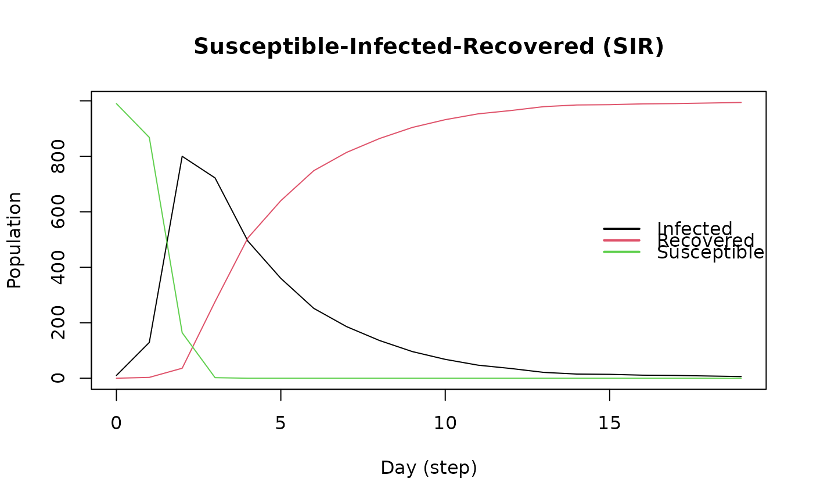

These functions provide access to the network of the model. The network is
represented by an edgelist. The agents_smallworld function generates a
small world network with the Watts-Strogatz algorithm. The
agents_from_edgelist function loads a network from an edgelist.
The get_network function returns the edgelist of the network.
Usage
agents_smallworld(model, n, k, d, p)
agents_from_edgelist(model, source, target, size, directed)
get_network(model)Arguments
- model
Model object of class epiworld_model.
- n, size
Number of individuals in the population.
- k
Number of ties in the small world network.
- d, directed
Logical scalar. Whether the graph is directed or not.
- p
Probability of rewiring.
- source, target
Integer vectors describing the source and target of in the edgelist.
Value
The 'agents_smallworld' function returns a model with the agents loaded.
The agents_from_edgelist function returns an empty model of class
epiworld_model.
The get_network function returns a data frame with two columns
(source and target) describing the edgelist of the network.
Examples
# Initializing SIR model with agents_smallworld
sir <- ModelSIR(name = "COVID-19", prevalence = 0.01, infectiousness = 0.9,
recovery = 0.1)
agents_smallworld(
sir,
n = 1000,
k = 5,
d = FALSE,
p = .01
)
run(sir, ndays = 100, seed = 1912)
#> _________________________________________________________________________
#> Running the model...
#> ||||||||||||||||||||||||||||||||||||||||||||||||||||||||||||||||||||||||| done.
#> done.
sir
#>
#> ________________________________________________________________________________
#> SIMULATION STUDY
#>
#> Name of the model : Susceptible-Infected-Recovered (SIR)
#> Population size : 1000
#> Agents' data : (none)
#> Number of entities : 0
#> Days (duration) : 100 (of 100)
#> Number of variants : 1
#> Last run elapsed t : 2.00ms
#> Last run speed : 42.84 million agents x day / second
#> Rewiring : off
#>
#> Global actions:
#> (none)
#>
#> Virus(es):
#> - COVID-19 (baseline prevalence: 1.00%)
#>
#> Tool(s):
#> (none)
#>
#> Model parameters:
#> - Infectiousness : 0.9000
#> - Prob. of Recovery : 0.1000
#>
#> Distribution of the population at time 100:
#> - (0) Susceptible : 990 -> 0
#> - (1) Infected : 10 -> 9
#> - (2) Recovered : 0 -> 991
#>
#> Transition Probabilities:
#> - Susceptible 0.92 0.08 0.00
#> - Infected 0.00 0.90 0.10
#> - Recovered 0.00 0.00 1.00
#>
# We can also retrieve the network
net <- get_network(sir)
head(net)
#> from to
#> 1 0 1
#> 2 0 2
#> 3 0 998
#> 4 0 999
#> 5 1 2
#> 6 1 3
# Simulating a bernoulli graph
set.seed(333)
n <- 1000
g <- matrix(runif(n ^ 2) < .01, nrow = n)
diag(g) <- FALSE
el <- which(g, arr.ind = TRUE) - 1L
# Generating an empty model
sir <- ModelSIR("COVID-19", .01, .8, .3)
agents_from_edgelist(
sir,
source = el[,1],
target = el[,2],
size = n,
directed = TRUE
)
# Running the simulation
run(sir, 50)
#> _________________________________________________________________________
#> |Running the model...
#> |||||||||||||||||||||||||||||||||||||||||||||||||||||||||||||||||||||||| done.
#> | done.
plot(sir)
